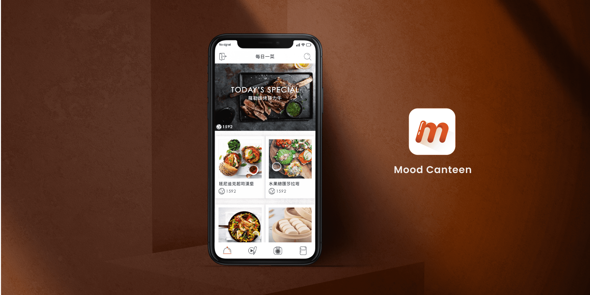
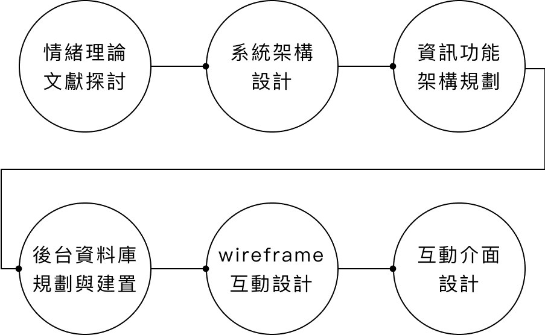
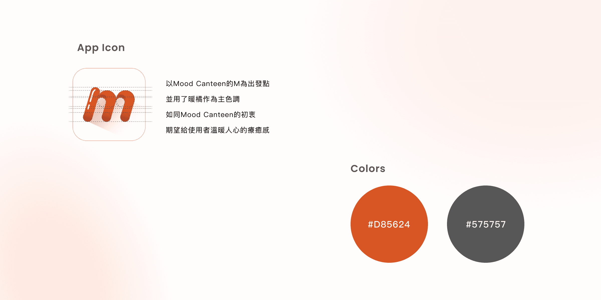
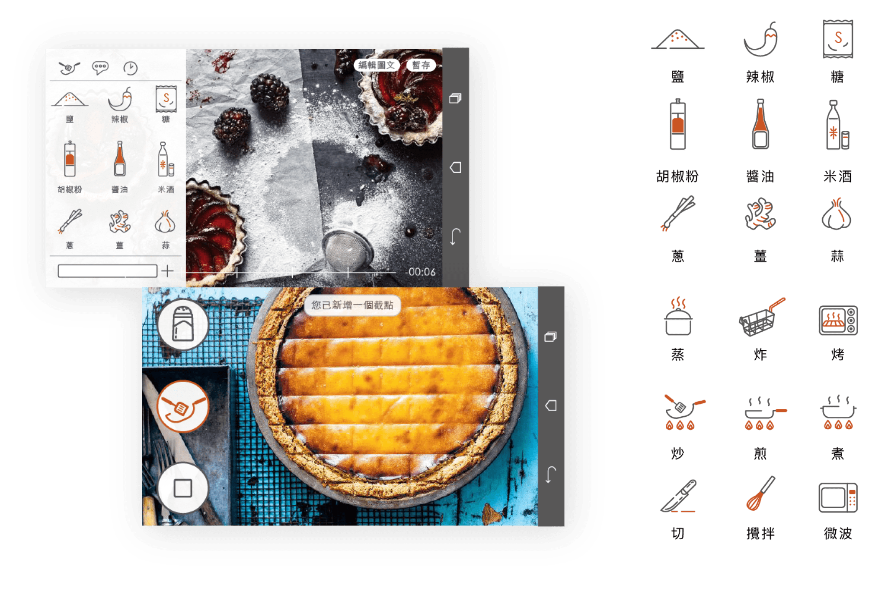

Mood Canteen 心情食堂
Type UI Design
將療癒情緒導入每天最重要的事情上-吃飯，提供一個情緒食譜創作與分享的平台，從錄影到食譜編輯都在此平台上輕鬆製作，為您親手製作的食譜加入一些情緒象徵，我們會將您的料理連同療癒情緒推薦給最需要療癒的使用者們，Mood
Canteen不只是食譜分享平台，也是情緒社群平台！
Project Background
本計畫的合作廠商為奇泓科技有限公司，他們是國內的電鍋製造商，希望藉由食譜應用程式來增加數位行銷的優勢。此外現代人在餐桌追求的不再只是填飽肚子，而是同時可以促進社交的契機以及療癒自己心情的管道。
因此我們開發
Mood Canteen 應用程式作為數位行銷之工具，影響使用者對奇泓科技的品牌印象。 而我們找到使用者的需求，以食物與情緒之間的影響療癒效果為出發點，透過 Mood Canteen 應用程式與使用者做連結。
Project Process
食物、烹飪、情緒，為了解這三個的相關聯性以及如何互相影響，進行了情緒理論相關的文獻探討，接著與合作的工程師、教授們研究系統架構的設計與資訊架構，討論出如何知道使用者的情緒？又如何知道食物相對應的情緒？以及如何推薦最適合的療癒餐點給使用者？最終討論該怎麼建置後台資料庫，以及由我規劃整個
APP 的 Wireframe 和UI設計。

Sentiment Analysis and Wireframe
第一次使用 Mood
Canteen 時，我們會透過問卷，以及分析使用者 Facebook
貼文，來了解他的個性與情緒，建立一份此使用者的情緒資料庫。另一方面，我們針對社群媒體上關於食物的發文與照片進行情緒分析，以此建立另一份食譜情緒資料庫。透過這兩個資料庫來推薦使用者所需的療癒食譜。在使用 Mood
Canteen 瀏覽食譜時，我們可以對該食譜進行情緒選擇，而這些選擇會成為後台更新情緒資料庫的重要依據。

UI Design
Mood Canteen
整體風格以線條感插畫來呈現溫馨活潑的感覺，首頁會根據對該使用者的情緒分析來推薦適合的療癒食譜，每一份食譜點進去後可以看到影片以及步驟文字說明，瀏覽者可以選擇他覺得該食譜是什麼樣的情緒，或是收藏、分享食譜。
使用者可以依照當下情緒來搜尋食譜，亦可用食材分類來搜尋。
錄製食譜功能則是提供製作食譜影片的工具，在錄製的同時可以點擊「食材」或「烹飪動作」來新增影片節點，在錄完影片後的編輯步驟中，可以為每一個節點新增小動畫在影片中，增加影片的趣味。

UI Demo Video